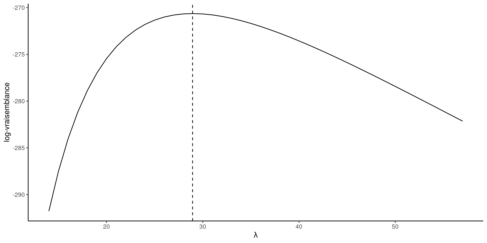
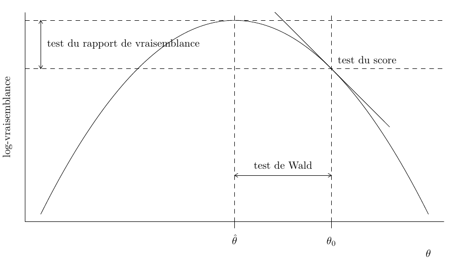

Modélisation statistique
02. Inférence basée sur la vraisemblance
2024
Motivation
La base de données attente contient le temps en secondes entre 17h59 et l’heure de départ de la prochain rame de métro à la station Université de Montréal sur la ligne bleue du métro de Montréal. Les données ont été collectées sur trois mois (62 jours en semaine). Les observations sont positives et vont de \(4\) à \(57\) secondes.
Figure 1: Histogramme du temps d’attente; les traits indiquent les temps observés.
Modèle statistique
Le point de départ d’un modèle statistique est le processus de génération de données.
Nous postulons que les données \(\boldsymbol{y}\) proviennent d’une loi de probabilité avec un vecteur de paramètres (inconnu) de dimension \(p\), dénoté \(\boldsymbol{\theta} \in \boldsymbol{\Theta} \subseteq \mathbb{R}^p\).
En supposant que les données sont indépendantes, la densité (ou la fonction de masse) conjointe se factorise en \[\begin{align*} f(\boldsymbol{y} ; \boldsymbol{\theta}) = \prod_{i=1}^n f_i(y_i ; \boldsymbol{\theta}) = f_1(y_1 ; \boldsymbol{\theta}) \times \cdots \times f_n(y_n ; \boldsymbol{\theta}). \end{align*}\] Si les données sont identiquement distribuées, alors toutes les densités marginales sont identiques, ce qui signifie que \(f_1(\cdot) = \cdots f_n(\cdot)\).
Modèle exponentiel pour les temps d’attente
Pour modéliser le temps d’attente, nous pouvons considérer par exemple une loi exponentielle \(Y_i \stackrel{\mathrm{iid}}{\sim}\mathsf{exp}(\lambda)\) avec paramètre d’échelle \(\lambda>0\), dont la densité est \[f(x) =\lambda^{-1}\exp(-x/\lambda), \qquad x \ge 0.\] L’espérance est égale à l’échelle, donc \(\mathsf{E}(Y)=\lambda\).
Densité conjointe du modèle exponentielle
Dans notre exemple, la densité conjointe du modèle exponentielle pour un vecteur d’observations \(y_1, \ldots, y_n\) est \[\begin{align*} f(\boldsymbol{y}) = \prod_{i=1}^n f(y_i) =\prod_{i=1}^n \lambda^{-1} \exp(- y_i/\lambda) = \lambda^{-n} \exp\left(- \sum_{i=1}^n y_i/\lambda\right) \end{align*}\] L’espace d’échantillonnage est \(\mathbb{R}_{+}^n = [0, \infty)^n,\) tandis que l’espace des paramètres est \((0, \infty).\)
Pour estimer le paramètre d’échelle \(\lambda\) et obtenir des mesures d’incertitude appropriées, nous avons besoin d’un cadre de modélisation.
Vraisemblance
Definition 1 La vraisemblance \(L(\boldsymbol{\theta})\) est une fonction des paramètres \(\boldsymbol{\theta}\) qui donne la probabilité (ou densité) d’observer un échantillon selon une loi postulée, en traitant les observations comme fixes, \[\begin{align*} L(\boldsymbol{\theta}; \boldsymbol{y}) = f(\boldsymbol{y}; \boldsymbol{\theta}), \end{align*}\] où \(f(\boldsymbol{y}; \boldsymbol{\theta})\) désigne la densité ou la fonction de masse conjointe du \(n\)-vecteur des observations.
En pratique, on travaille plutôt avec la log-vraisemblance \(\ell(\boldsymbol{\theta} ; \boldsymbol{y}) = \ln L(\boldsymbol{\theta} ; \boldsymbol{y})\).
Estimateur du maximum de vraisemblance
Definition 2 L’estimateur du maximum de vraisemblance (EMV) \(\widehat{\boldsymbol{\theta}}\) est la valeur du vecteur qui maximise la vraisemblance,1. \[\begin{align*} \widehat{\boldsymbol{\theta}} = \mathrm{arg max}_{\boldsymbol{\theta} \in \boldsymbol{\Theta}} L(\boldsymbol{\theta}; \boldsymbol{y}) = \mathrm{arg max}_{\boldsymbol{\theta} \in \boldsymbol{\Theta}} \ell(\boldsymbol{\theta}; \boldsymbol{y}). \end{align*}\]
Compréhension du maximum de vraisemblance
Dans le cadre discret, la fonction de masse donne la probabilité d’un résultat.
Nous voulons trouver les valeurs des paramètres qui rendent les données les plus probables d’avoir été générées par notre modèle.
Pensée scientifique: tout ce que nous observons, nous nous attendions à l’obtenir.
Dérivation des EMV
Nous pouvons faire appel au calcul différentiel pour trouver le maximum de la fonction \(\ell(\lambda)\).
En prenant la dérivée première et en fixant le résultat à zéro, nous trouvons \[\begin{align*} \frac{\mathrm{d} \ell(\lambda)}{\mathrm{d} \lambda} = -\frac{n}{\lambda} + \frac{1}{\lambda^2} \sum_{i=1}^n y_i = 0. \end{align*}\] Si on résout pour \(\lambda\), on trouve \(\widehat{\lambda} = \sum_{i=1}^n y_i / n.\)
La dérivée seconde de la log vraisemblance est \(\mathrm{d}^2 \ell(\lambda)/\mathrm{d} \lambda^2 = n(\lambda^{-2} - 2\lambda^{-3}\overline{y}),\) et en substituant \(\lambda = \overline{y}\), on obtient \(-n/\overline{y}^2\). Puisque cette valeur est négative, \(\widehat{\lambda}\) maximise la fonction.
Log vraisemblance exponentielle et EMV
Figure 2: Fonction de log-vraisemblance exponentielle pour le temps d’attente, avec l’estimation du maximum de vraisemblance données par la ligne verticale pointillée (droite).
Invariance des estimateurs du maximum de vraisemblance
Si \(g(\boldsymbol{\theta}): \mathbb{R}^p \mapsto \mathbb{R}^k\) pour \(k \leq p\) est une fonction du vecteur de paramètres \(\boldsymbol{\theta}\), alors \(g(\widehat{\boldsymbol{\theta}})\) est un estimateur du maximum de vraisemblance de \(g(\boldsymbol{\theta})\).
Par exemple, nous pourrions calculer l’estimation du maximum de vraisemblance de la probabilité d’attendre plus d’une minute, \(\Pr(T>60) = \exp(-60/\widehat{\lambda})= 0.126,\) ou en utilisant R via la fonction de loi pexp.
On peut sélectionner la paramétrisation qui facilite le plus l’optimisation!
Fonction de score
Le gradient (ou vecteur de dérivées première) de la log vraisemblance \[\begin{align*} U(\boldsymbol{\theta}) = \frac{\partial \ell(\boldsymbol{\theta}; \boldsymbol{y})}{\partial \boldsymbol{\theta}} \end{align*}\] est dénommé fonction de score.
Sous conditions de régularité (voir par ex. le chapitre 4 de (Davison:2003?)), les EMV satisfont l’équation du score \[\begin{align*} U(\widehat{\boldsymbol{\theta}})=0. \end{align*}\]
Information
Comment mesurer la précision de notre estimateur ? Les matrices d’observation encodent la courbure de la log vraisemblance et fournissent de l’information sur la variabilité de \(\widehat{\boldsymbol{\theta}}.\)
La matrice d’information observée est le négatif de la hessienne de la log vraisemblance, \[\begin{align*} j(\boldsymbol{\theta}; \boldsymbol{y})=-\frac{\partial^2 \ell(\boldsymbol{\theta}; \boldsymbol{y})}{\partial \boldsymbol{\theta} \partial \boldsymbol{\theta}^\top}, \end{align*}\] évaluée à l’estimation du maximum de vraisemblance \(\widehat{\boldsymbol{\theta}},\) soit \(j(\widehat{\boldsymbol{\theta}}).\) Sous des conditions de régularité, la matrice d’information de Fisher est \[\begin{align*} i(\boldsymbol{\theta}) = \mathsf{E}\left\{U(\boldsymbol{\theta}; \boldsymbol{Y}) U(\boldsymbol{\theta}; \boldsymbol{Y})^\top\right\} = \mathsf{E}\left\{j(\boldsymbol{\theta}; \boldsymbol{Y})\right\} \end{align*}\] À la fois la matrice d’information de Fisher et la matrice d’information observée sont symmétriques.
Matrices d’information pour données exponentielles
L’information de Fisher et l’observation observée pour un échantillon aléatoire simple de loi exponentielle \(Y_1, \ldots, Y_n,\) paramétrée en terme d’échelle \(\lambda,\) sont \[\begin{align*} j(\lambda; \boldsymbol{y}) &= -\frac{\partial^2 \ell(\lambda)}{\partial \lambda^2} = \frac{n}{\lambda^{2}} + \frac{2}{n\lambda^{3}}\sum_{i=1}^n y_i \\ i(\lambda) &= \frac{n}{\lambda^{2}} + \frac{2}{n\lambda^{3}}\sum_{i=1}^n \mathsf{E}(Y_i) = \frac{n}{\lambda^{2}} \end{align*}\] puisque \(\mathsf{E}(Y_i) = \lambda\) et que l’espérance est un opérateur linéaire. Les deux versions de l’information coïncident lorsque évaluées à l’EMV, \(i(\widehat{\lambda}) = j(\widehat{\lambda}) = n/\overline{y}^2\) pour \(\widehat{\lambda}=\overline{y}\) la moyenne de l’échantillon. Ce n’est généralement pas le cas.
Maximisation de la vraisemblance
- Pour obtenir l’estimateur du maximum de vraisemblance, nous trouverons généralement la valeur du vecteur \(\boldsymbol{\theta}\) qui résout l’équation du score \(U(\widehat{\boldsymbol{\theta}})=\boldsymbol{0}_p.\)
- Cela revient à résoudre simultanément un système de \(p\) équations en mettant à zéro la dérivée par rapport à chaque élément de \(\boldsymbol{\theta}\).
- Si \(j(\widehat{\boldsymbol{\theta}})\) est une matrice définie positive (c’est-à-dire que toutes ses valeurs propres sont positives), alors le vecteur \(\widehat{\boldsymbol{\theta}}\) est l’estimateur du maximum de vraisemblance.
Optimisation basée sur le gradient (algorithme de Newton–Raphson)
Si nous considérons une valeur initiale \(\boldsymbol{\theta}^{\dagger},\) sous des conditions de régularité appropriées, une expansion en série de Taylor du score dans un voisinage \(\boldsymbol{\theta}^{\dagger}\) des EMV \(\widehat{\boldsymbol{\theta}}\) donne \[\begin{align*} \boldsymbol{0}_p & = U(\widehat{\boldsymbol{\theta}}) \stackrel{\cdot}{\simeq} \left. \frac{\partial \ell(\boldsymbol{\theta})}{\partial \boldsymbol{\theta}} \right|_{\boldsymbol{\theta} = \boldsymbol{\theta}^{\dagger}} + \left. \frac{\partial^2 \ell(\boldsymbol{\theta})}{\partial \boldsymbol{\theta} \partial \boldsymbol{\theta}^\top}\right|_{\boldsymbol{\theta} = \boldsymbol{\theta}^{\dagger}}(\widehat{\boldsymbol{\theta}} - \boldsymbol{\theta}^{\dagger})\\&=U(\boldsymbol{\theta}^{\dagger}) - j(\boldsymbol{\theta}^{\dagger})(\widehat{\boldsymbol{\theta}} - \boldsymbol{\theta}^{\dagger}) \end{align*}\] et en la résolvant pour \(\widehat{\boldsymbol{\theta}}\) (à condition que la matrice \(p \times p\) \(j(\widehat{\boldsymbol{\theta}})\) soit inversible), nous obtenons \[\begin{align*} \widehat{\boldsymbol{\theta}} \stackrel{\cdot}{\simeq} \boldsymbol{\theta}^{\dagger} + j^{-1}(\boldsymbol{\theta}^{\dagger})U(\boldsymbol{\theta}^{\dagger}), \end{align*}\] ce qui suggère une procédure itérative à partir d’une valeur de départ \(\boldsymbol{\theta}^{\dagger}\) dans le voisinage du mode, jusqu’à ce que le gradient soit approximativement zéro.
Loi de Weibull
La fonction de répartition d’une variable aléatoire de loi Weibull avec paramètres d’échelle \(\lambda>0\) et de forme \(\alpha>0\) est \[\begin{align*} F(x; \lambda, \alpha) &= 1 - \exp\left\{-(x/\lambda)^\alpha\right\}, \qquad x \geq 0, \lambda>0, \alpha>0, \end{align*}\] et la fonction de densité correspondante est \[\begin{align*} f(x; \lambda, \alpha) &= \frac{\alpha}{\lambda^\alpha} x^{\alpha-1}\exp\left\{-(x/\lambda)^\alpha\right\}, \qquad x \geq 0, \lambda>0, \alpha>0. \end{align*}\] La loi de Weibull inclut la loi exponentielle comme cas particulier lorsque \(\alpha=1.\) L’espérance de \(Y \sim \mathsf{Weibull}(\lambda, \alpha)\) est \(\mathsf{E}(Y) = \lambda \Gamma(1+1/\alpha).\)
Maximum de vraisemblance pour un échantillon Weibull
La log vraisemblance du modèle \(\mathsf{Weibull}(\lambda, \alpha)\) est \[\begin{align*} \ell(\lambda, \alpha) = n \ln(\alpha) - n\alpha\ln(\lambda) + (\alpha-1) \sum_{i=1}^n \ln y_i - \lambda^{-\alpha}\sum_{i=1}^n y_i^\alpha. \end{align*}\] Le gradient de cette fonction est obtenue par différentiation terme par terme, \[\begin{align*} \frac{\partial \ell(\lambda, \alpha)}{\partial \lambda} &= -\frac{n\alpha}{\lambda} +\alpha\lambda^{-\alpha-1}\sum_{i=1}^n y_i^\alpha \\ \frac{\partial \ell(\lambda, \alpha)}{\partial \alpha} &= \frac{n}{\alpha} - n \ln(\lambda) + \sum_{i=1}^n \ln y_i - \sum_{i=1}^n \left(\frac{y_i}{\lambda}\right)^{\alpha} \times\ln\left(\frac{y_i}{\lambda}\right). \end{align*}\]
Démo R
Optimisation numérique pour obtenir les estimations du maximum de vraisemblance de la loi Weibull.
Diagramme quantile-quantile
Un diagramme quantile-quantile représente les données
- sur l’axe des abscisses, les quantiles théoriques \(\widehat{F}^{-1}\{i/(n+1)\}\), où \(F^{-1}\) est l’estimation de la fonction quantile du modèle postulé.
- sur l’axe des ordonnées, les quantiles empiriques ordonnés en ordre croissant \(y_{(1)} \le \cdots \le y_{(n)}\).
Si le modèle est adéquat, les valeurs ordonnées devraient suivre une droite de pente unitaire qui passe par l’origine.
Routines d’optimisation
Le paquet MASS inclut des utilitaires pour estimer les paramètres de loi usuelles
# Estimer les paramètres
fit_weibull <- MASS::fitdistr(x = attente, densfun = "weibull")
# Extraire les EMVs
fit_weibull$estimate
## shape scale
## 2.6 32.6
# Calculer les positions pour le diagramme QQ
n <- length(attente) # taille d'échantillon
xpos <- qweibull( # fonction quantile
p = ppoints(n), # variables pseudo-uniformes
shape = fit_weibull$estimate['shape'],
scale = fit_weibull$estimate['scale'])
ypos <- sort(attente) # données triées en ordre croissant
#plot(x = xpos, y = ypos, panel.first = {abline(a = 0, b = 1)})Vérification de l’adéquation des modèles
Figure 3: Diagrammes quantile-quantile des modèles exponentiel (gauche) et Weibull (droite) avec intervalles de confiance ponctuels à 95% obtenus par autoamorçage.
Loi d’échantillonage
La loi d’échantillonnage d’un estimateur \(\widehat{\boldsymbol{\theta}}\) est la loi de probabilité induite par les données aléatoire sous-jacentes (rappelons que les intrants de l’estimateur sont aléatoires, donc la sortie l’est également).
Dénotons la vraie valeur du vecteur de paramètres \(\boldsymbol{\theta}_0.\) Sous des conditions de régularité appropriées, le théorème central limite donne \[\begin{align*} i(\boldsymbol{\theta}_0)^{-1/2}U(\boldsymbol{\theta}_0) \stackrel{\cdot}{\sim}\mathsf{normale}_p(\boldsymbol{0}_p, \mathsf{I}_p). \end{align*}\]
Des approximations similaires pour la loi d’échantillonnage de \(\widehat{\boldsymbol{\theta}}\) montrent que \[\begin{align*} \widehat{\boldsymbol{\theta}} \stackrel{\cdot}{\sim} \mathsf{normale}_p\{\boldsymbol{\theta}_0, i^{-1}(\boldsymbol{\theta})\} \end{align*}\] où la matrice de covariance est l’inverse de l’information de Fisher.1
Matrice de covariance et erreurs-type pour la loi de Weibull
Nous pouvons utiliser ces résultats pour l’inférence statistique! Les erreurs-type sont simplement la racine carrée des entrées de la diagonale de la matrice hessienne inverse, \(\mathrm{se}(\widehat{\boldsymbol{\theta}})=[\mathrm{diag}\{j^{-1}(\widehat{\boldsymbol{\theta}})\}]^{1/2}\).
# 'opt_weibull' contient les résultats de l'optimisation
# où on a minimisé le négatif de la log vraisemblance
# La matrice hessienne retournée est évaluée aux EMV
# c'est donc l'information observée
(mle_weibull <- opt_weibull$par)
## [1] 32.6 2.6
(obsinfo_weibull <- opt_weibull$hessian)
## [,1] [,2]
## [1,] 0.396 -0.818
## [2,] -0.818 16.998
# La matrice de covariance est l'inverse de l'information
(vmat_weibull <- solve(obsinfo_weibull))
## [,1] [,2]
## [1,] 2.804 0.1349
## [2,] 0.135 0.0653
# Erreurs-type
(se_weibull <- sqrt(diag(vmat_weibull)))
## [1] 1.675 0.256Intervalles de confiance de Wald
À partir de ces résultats, il est possible d’obtenir des intervalles de confiance de niveau \((1-\alpha)\) de Wald pour les paramètres de \(\boldsymbol{\theta}\), où pour \(\theta_j\) \((j=1, \ldots, p)\), \[\begin{align*} \widehat{\theta}_j \pm \mathfrak{z}_{1-\alpha/2}\mathrm{se}(\widehat{\theta}_j), \end{align*}\] avec \(\mathfrak{z}_{1-\alpha/2}\) le quantile \(1-\alpha/2\) d’une loi normale standard.
Ces intervalles de confiance sont symmétriques.
Méthodes delta
Le résultat sur la normalité asymptotique de l’estimateur peut être utilisé pour dériver les erreurs standard pour d’autres quantités d’intérêt.
Si \(\phi = g(\boldsymbol{\theta})\), où \(g: \mathbb{R}^p \to \mathbb{R}^k\) pourr \(k \leq p\) est une fonction différentiable de \(\boldsymbol{\theta}\) non-nulle à \(\boldsymbol{\theta}_0\) alors \[\widehat{\phi} \stackrel{\cdot}{\sim}\mathsf{normale}(\phi_0, \nabla \phi^\top i(\boldsymbol{\theta}_0)^{-1} \nabla \phi),\] où \[\nabla \phi=[\partial \phi/\partial \theta_1, \ldots, \partial \phi/\partial \theta_p]^\top.\]
La matrice de variance et le Jacobien sont évalués à l’estimation du maximum de vraisemblance \(\widehat{\boldsymbol{\theta}}.\)
Probabilité d’attendre plus d’une minute selon le modèle exponentiel
Considérons la probabilité d’attendre plus d’une minute, \(\phi=g(\lambda) = \exp(-60/\lambda)\). L’estimation du maximum de vraisemblance est, par invariance, \(0.126\) et le gradient de \(g\) par rapport au paramètre d’échelle est \(\nabla \phi = \partial \phi / \partial \lambda = 60\exp(-60/\lambda)/\lambda^2.\)
lambda_hat <- mean(attente)
phi_hat <- exp(-60/lambda_hat)
# Dérivée de phi par rapport à lambda
dphi <- function(lambda){60*exp(-60/lambda)/(lambda^2)}
# Inverse de l'information observée
V_lambda <- lambda_hat^2/length(attente)
# Variance de phi
V_phi <- dphi(lambda_hat)^2 * V_lambda
# Erreurs-type de phi
(se_phi <- sqrt(V_phi))
## [1] 0.0331Comparaison de modèles emboîtés
Nous considérons une hypothèse nulle \(\mathscr{H}_0\) qui impose des restrictions sur les valeurs possibles de \(\boldsymbol{\theta}\), par rapport à une alternative sans contrainte \(\mathscr{H}_a.\)
Il existe deux modèles emboîtés : un modèle complet (hypothèse alternative) et un modèle réduit (hypothèse nulle) pour lequel l’espace des paramètres qui est un sous-ensemble de celui du modèle complet auquel nous imposons \(q\) restrictions sur les paramètres.
Par exemple, la loi exponentielle est un cas particulier de la loi de Weibull si \(\alpha=1\).
Tests basés sur la vraisemblance
L’hypothèse nulle \(\mathscr{H}_0\) testée est “le modèle réduit est une simplification adéquate du modèle complet”. La vraisemblance fournit trois classes principales de statistiques pour tester cette hypothèse, soit
- les statistiques des tests du rapport de vraisemblance, notées \(R,\) qui mesurent la différence de log vraisemblance (distance verticale) entre \(\ell(\widehat{\boldsymbol{\theta}})\) et \(\ell(\widehat{\boldsymbol{\theta}}_0).\)
- les statistiques des tests de Wald, notées \(W,\) qui considèrent la distance horizontale normalisée entre \(\widehat{\boldsymbol{\theta}}\) et \(\widehat{\boldsymbol{\theta}}_0.\)
- les statistiques des tests de score de Rao, notées \(S,\) qui examinent le gradient repondéré de \(\ell,\) évaluée uniquement à \(\widehat{\boldsymbol{\theta}}_0\).
où \(\widehat{\boldsymbol{\theta}}_0\) sont les EMV contraints pour le modèle sous l’hypothèse nulle, et \(\widehat{\boldsymbol{\theta}}\) les EMV du modèle complet.
Visualiser les tests basés sur la vraisemblance
Figure 4: Fonction de log vraisemblance et illustrations des éléments des statistique du score, de Wald et du rapport de vraisemblance.
Statistiques de tests dérivées de la vraisemblance
Les trois principales classes de statistiques permettant de tester une hypothèse nulle simple \(\mathscr{H}_0 : \boldsymbol{\theta}=\boldsymbol{\theta}_0\) par rapport à l’hypothèse alternative \(\mathscr{H}_a : \boldsymbol{\theta} \neq \boldsymbol{\theta}_0\) sont \[\begin{align*} W(\boldsymbol{\theta}_0) &= (\widehat{\boldsymbol{\theta}}-\boldsymbol{\theta}_0)^\top j(\widehat{\boldsymbol{\theta}})(\widehat{\boldsymbol{\theta}}-\boldsymbol{\theta}_0), &&(\text{Wald}) \\ R(\boldsymbol{\theta}_0) &= 2 \left\{ \ell(\widehat{\boldsymbol{\theta}})-\ell(\boldsymbol{\theta}_0)\right\}, &&(\text{rapport de vraisemblance})\\ S(\boldsymbol{\theta}_0) &= U^\top(\boldsymbol{\theta}_0)i^{-1}(\boldsymbol{\theta}_0)U(\boldsymbol{\theta}_0), && (\text{score}) \end{align*}\] où \(\boldsymbol{\theta}_0\) est la valeur nulle postulée du paramètre avec \(q\) restrictions. Si \(q \neq p\), alors on remplace \(\boldsymbol{\theta}_0\) par l’estimation contrainte \(\widehat{\boldsymbol{\theta}}_0\).
Sous \(\mathscr{H}_0\), les trois statistiques de test suivent une loi asymptotique \(\chi^2_q\), où les degrés de liberté \(q\) indiquent le nombre de restrictions.
Version unidimensionnelle directionnelles des statistiques de vraisemblance
Si \(\theta\) est un scalaire (cas \(q=1\)), des versions directionnelles de ces statistiques existent, \[\begin{align*} w(\theta_0)&=(\widehat{\theta}-\theta_0)/\mathsf{se}(\widehat{\theta}) &&(\text{Wald}) \\ r({\theta_0}) &= \mathrm{sign}(\widehat{\theta}-\theta)\left[2 \left\{\ell(\widehat{\theta})-\ell(\theta)\right\}\right]^{1/2} &&(\text{racine directionnelle de vraisemblance}) \\ s(\theta_0)&=i^{-1/2}(\theta_0)U(\theta_0) &&(\text{score}) \end{align*}\]
Sous cette forme, si l’hypothèse nulle \(\mathscr{H}_0: \theta = \theta_0\) est vraie, alors \(w(\theta_0)\stackrel{\cdot}{\sim} \mathsf{normale}(0,1)\), etc.
Comparaison entre les tests
Asymptotiquement, toutes les statistiques de test sont équivalentes (dans le sens où elles conduisent aux mêmes conclusions sur \(\mathscr{H}_0\)), mais elles ne sont pas identiques.
- La statistique du test du rapport de vraisemblance est normalement la plus puissante des trois tests (préférable).
- Le test du rapport de vraisemblance est invariant par rapport aux reparamétrages.
- La statistique de score \(S\) ne nécessite que le calcul du score et de l’information de Fisher sous \(\mathscr{H}_0\) (car par définition \(U(\widehat{\theta})=0\)), elle peut donc être utile dans les problèmes où les calculs de l’estimateur du maximum de vraisemblance sous l’alternative sont coûteux ou impossibles.
- Le test de Wald est le plus facile à dériver, mais son taux de couverture empirique peut laisser à désirer si la loi d’échantillonnage de \(\widehat{\boldsymbol{\theta}}\) est fortement asymétrique.
Surface de vraisemblance et régions de confiance
Figure 5: Surface de log-vraisemblance pour le modèle de Weibull avec des régions de confiance de 10 %, 20 %, , 90 % du rapport de vraisemblance (courbes de contour blanches). Les valeurs de log vraisemblance les plus élevées sont indiquées par des couleurs plus foncées.
Test de Wald pour comparer les modèles Weibull et exponentiel
Nous pouvons tester si la loi exponentielle est une simplification adéquate de la loi de Weibull en imposant la restriction \(\mathscr{H}_0 : \alpha=1\). Nous comparons les statistiques de Wald \(W\) à un \(\chi^2_1\).
# Calculer la statistique de Wald
wald_exp <- (mle_weibull[2] - 1)/se_weibull[2]
# Calculer la valeur-p
pchisq(wald_exp^2, df = 1, lower.tail = FALSE)
## [1] 3.61e-10
# valeur-p inférieure à 5%, rejet de l'hypothèse nulle
# Intervalles de confiance de niveau 95%
mle_weibull[2] + qnorm(c(0.025, 0.975))*se_weibull[2]
## [1] 2.1 3.1
# La valeur 1 n'appartient pas à l'intervalle, rejeter H0Nous rejetons l’hypothèse nulle, ce qui signifie que le sous-modèle exponentiel n’est pas une simplification adéquate du modèle de Weibull \((\alpha \neq 1\)).
Tests de vraisemblance pour les paramètres scalaires
- Parfois, nous pouvons vouloir effectuer des tests d’hypothèse ou dériver des intervalles de confiance pour des composantes spécifiques du modèle (un seul paramètre ou une transformation scalaire \(\phi = g(\boldsymbol{\theta})\).
- Dans ce cas, l’hypothèse nulle ne restreint qu’une partie de l’espace et les autres paramètres, dits de nuisance, ne sont pas spécifiés — la question est alors de savoir quelles valeurs utiliser pour la comparaison avec le modèle complet.
- Il s’avère que les valeurs qui maximisent la log-vraisemblance contrainte sont celles que l’on doit utiliser pour le test, et la fonction particulière dans laquelle ces paramètres de nuisance sont intégrés est appelée vraisemblance profilée.
Vraisemblance profilée
Considérons un modèle paramétrique avec une fonction de log vraisemblance \(\ell(\boldsymbol{\theta})\). On partitionne le \(p\)-vecteur de paramètres \(\boldsymbol{\theta}=(\boldsymbol{\psi}, \boldsymbol{\varphi})\), où les paramètres d’intérêt sont \(\boldsymbol{\psi}\) de dimension \(q\) et un vecteur de nuisance à \(\boldsymbol{\varphi}\) de dimension \(p-q.\)
Nous pouvons considérer la vraisemblance profilée \(\ell_{mathsf{p}},\) une fonction de \(\boldsymbol{\psi}\) uniquement, qui est obtenue en maximisant la vraisemblance ponctuellement à chaque valeur fixe \(\boldsymbol{\psi}_0\) par rapport au vecteur de nuisance \(\boldsymbol{\varphi}_{\psi_0},\) \[\begin{align*} \ell_{\mathsf{p}}(\boldsymbol{\psi})=\max_{\boldsymbol{\varphi}}\ell(\boldsymbol{\psi}, \boldsymbol{\varphi})=\ell(\boldsymbol{\psi}, \widehat{\boldsymbol{\varphi}}_{\boldsymbol{\psi}}). \end{align*}\]
Vraisemblance profilée pour le paramètre de forme d’une loi Weibull
Considérons le paramètre de forme \(\psi \equiv\alpha\) comme paramètre d’intérêt, et l’échelle \(\varphi\equiv\lambda\) comme paramètre de nuisance. À l’aide du gradient \[\begin{align*} \frac{\partial \ell(\lambda, \alpha)}{\partial \lambda} &= -\frac{n\alpha}{\lambda} +\alpha\lambda^{-\alpha-1}\sum_{i=1}^n y_i^\alpha \\ \end{align*}\] on trouve que la valeur de l’échelle qui maximise le logarithme de la vraisemblance pour \(\alpha\) donné est \[\begin{align*} \widehat{\lambda}_\alpha = \left( \frac{1}{n}\sum_{i=1}^n y_i^\alpha\right)^{1/\alpha}. \end{align*}\] et en introduisant cette valeur, on obtient une fonction de \(\alpha\) uniquement. Cela permet de réduire le problème d’optimisation à une recherche linéaire de \(\ell_{\mathsf{p}}(\alpha)\).
Vraisemblance profilée pour le paramètre de forme
Figure 6: Vraisemblance profilée pour \(\alpha\), représentée par une ligne grise pointillée (à gauche) et par une coupe transversale (à droite). La vraisemblance profilée du le panneau de droite a été décalée verticalement pour être zéro quand évaluée aux EMV; les lignes horizontales en pointillé indiquent les points de coupure pour les intervalles de confiance à 95% et 99%.
Analogie pour la log vraisemblance profilée
- Si l’on considère ces courbes de niveau comme celles d’une carte topographique, la vraisemblance profilée correspond à une marche le long de la crête de la log vraisemblance dans la direction \(\psi\).
- Le panneau de droite de la Figure 6 montre le profil d’élévation.
- Il faudrait obtenir numériquement, à l’aide d’un algorithme de recherche linéaire, les limites de l’intervalle de confiance de part et d’autre de \(\widehat{\alpha}\), mais il est clair que \(\alpha=1\) n’est même pas compris dans l’intervalle de confiance à 99%.
Vraisemblance profilée pour l’espérance d’une loi Weibull
- Nous pouvons également utiliser l’optimisation numérique pour profiler la vraisemblance pour d’autres paramètres. Par exemple, supposons que nous soyons intéressés par l’espérance du temps d’attente, \(\mu = \mathsf{E}(Y) = \lambda\Gamma(1+1/\alpha)\).
- À cet effet, nous reparamétrons le modèle en termes de \((\mu, \alpha)\), où \(\lambda=\mu/\Gamma(1+1/\alpha)\).
- Nous créons ensuite une fonction qui optimise le logarithme de la vraisemblance pour une valeur fixe de \(\mu\), puis renvoie \(\widehat{\alpha}_{\mu}\), \(\mu\) et \(\ell_{\mathrm{p}}(\mu)\).
Démo R
Créer une fonction pour calculer les intervalles de confiance basés sur la log vraisemblance profilée.
Calcul des intervalles de confiance
Pour obtenir les intervalles de confiance d’un paramètre scalaire, il existe une astuce qui facilite la dérivation.
- Calculer la racine directionnelle du rapport de vraisemblance \[r(\psi) = \mathrm{sign}(\psi - \widehat{\psi})\{2\ell_{\mathrm{p}}(\widehat{\psi}) -2 \ell_{\mathrm{p}}(\psi)\}^{1/2}\] sur une grille fine de \(\psi\)
- Ajuster une spline cubique de lissage avec \(y=\psi\) comme variable réponse et \(x=r(\psi)\) comme variable explicative.
- Prédire la courbe aux quantiles normaux \(x_l=\mathfrak{z}_{\alpha/2}\) et \(x_u=\mathfrak{z}_{1-\alpha/2}\).
- Retourner les prédictions sous forme d’intervalle de confiance.
Vraisemblance profilée pour l’espérance d’une loi Weibull
Figure 7: Racine directionnelle du rapport de vraisemblance (gauche) et log vraisemblance profilée (droite) en fonction de l’espérance \(\mu\) pour un modèle Weibull.
Comparaison de modèles
La vraisemblance peut également servir d’élément de base pour la comparaison des modèles : plus \(\ell(\boldsymbol{\widehat{\theta}})\) est grand, meilleure est l’adéquation. - Cependant, la vraisemblance ne tient pas compte de la complexité du modèle dans le sens où des modèles plus complexes avec plus de paramètres conduisent à une vraisemblance plus élevée. - Cela ne pose pas de problème pour la comparaison de modèles emboîtés à l’aide du test du rapport de vraisemblance, car nous ne tenons compte que de l’amélioration relative de l’adéquation. - Il existe un risque de surajustement si l’on ne tient compte que de la vraisemblance d’un modèle.
Critères d’information
Les critères d’information combinent la log vraisemblance, qui mesure l’adéquation du modèle aux données, avec une pénalité pour le nombre de paramètres. \[\begin{align*} \mathsf{AIC}&=-2\ell(\widehat{\boldsymbol{\theta}})+2p \\ \mathsf{BIC}&=-2\ell(\widehat{\boldsymbol{\theta}})+p\ln(n), \end{align*}\] où \(p\) dénote le nombre de paramètres du modèle.
Le plus petit la valeur du critère d’information d’Akaike (AIC) ou du critère bayésien d’information (BIC), le meilleur le modèle.
Notez que les critères d’information ne constituent pas des tests d’hypothèse formels sur les paramètres, mais qu’ils peuvent être utilisés pour comparer des modèles non imbriqués (mais ils sont alors très imprécis!)
Objectifs d’apprentissage
Objectifs d’apprentissage
- Apprendre la terminologie associée à l’inférence basée sur la vraisemblance.
- Dériver des expressions explicites pour l’estimateur du maximum de vraisemblance de modèles simples.
- En utilisant l’optimisation numérique, obtenir des estimations de paramètres et leurs erreurs-type en utilisant le maximum de vraisemblance.
- Utiliser les propriétés de la vraisemblance pour les grands échantillons afin d’obtenir des intervalles de confiance et les propriétés des tests statistiques.
- Utiliser les critères d’information pour la sélection des modèles.
Références